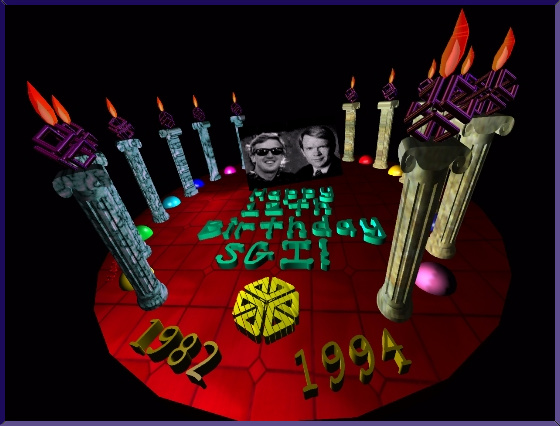
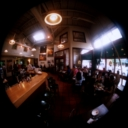

One day while reading news, I learned that SGI was holding a digital art contest to celebrate SGI's 12th birthday. The 1st prize was a mountain bike. 2nd prize was a custom catered beer-bash for 30 of your friends. Wow... mountain bike and beer... that's enough to get anyone to pull an all-nighter and give it a shot.
I really didn't need the mountain bike since I'm quite attached to my Schwinn 21-speed Impact Pro that I customized. Plus I didn't exactly live to drink beer either. But it was a worthy cause and heck... what better way to learn IRIS Showcase's 3D gizmo.
I think this was one of those pieces where I didn't have a concept. I just started importing various 3D models that were laying around and began composing a scene with the simple but powerful scene composition capabilities of Showcase. I decided that texture was going to be key so I got on a RealityEngine and went nuts with the texture gizmo editor. At this time, I still didn't have access to a raytracer so I could only push IRIS GL to its limit. Gosh..... wouldn't shadows, multiple reflections and candle glow have been nice? Instead, I had to settle for gouraud shading and Phong lighting. :-(
By the way, this design lost to one that was nicely done and rendered with a raytracer. D'ohhh!
For some reason.... I decided to put Ed and TJ's faces into the piece.... maybe because I was running out of ideas. So I found a publicity photo of Ed and started tweaking him. Here's a picture of Ed showing just how cerebral he can really be. I used one of Paul Haeberli's many gems to do the distorting. It's pretty much just real-time texture mapping manipulation. I wound up not using this because I think Ed would've been offended. :-)
Using Showcase 3D and Inventor SceneViewer, here's a wireframe view of the final scene before lighting and material were applied. Notice that it kinda looks like a flat birthday cake with 12 candles around it. I think I was subliminally influenced by the famous ballroom scene in "Beauty and the Beast."
Here's another view of the same scene with some "sAmbO-effect" thrown in there for dramatics. I'm not sure but I've been told that everything I produce tends to have this "sAmbO-effect." It could be because I've been shooting quite a bit with my Sigma 14mm Rectalinear Fisheye Lens.
Now for a view of the same scene with ultra "sAmbO-effect" turned on, check out this shot. I did it for fun... to see just how wide I could go while maintaining an interesting yet recognizeable image.

Notice that I used environment mapping to make the chrome SGI logos more realistic. I applied SGI's overly-used environment map of choice (cafe.rgb) to the cube and voila, it's like we're looking at a birthday pizza in a cafe.
Just a footnote... I was told by a reliable source that this is a circular fisheye image of an actual cafe in Palo Alto. Now can any astute reader out there in cyberspace positively identify this place? Feel free to email me below and tell me. A double latte to the first correct answer!


{kind=link}
{kind=link}
{kind=link}
{kind=link}